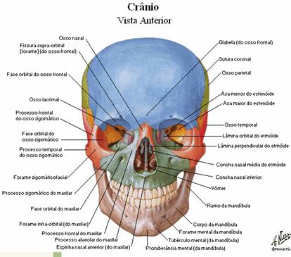

Paralisia total de todos, ou alguns, músculos da expressão facial.
Ossos da Face
Segundo Moore, K, 1999, a cabeça consiste em crânio, face, escalpo, dentes, encéfalo, nervos cranianos, meninges, órgãos dos sentidos especiais e outras estruturas, como vasos sanguíneos, linfáticos e gordura.
O crânio é o esqueleto da cabeça, e é constituído pelo neurocrânio e pelo esqueleto da face. O neurocrânio (caixa do cérebro) fornece um invólucro para o cérebro e as meninges escefálicas (membranas que recobrem o cérebro), partes proximais dos nervos cranianos e vasos sanguíneos. O termo “crânio” é algumas vezes restrito ao crânio sem a mandíbula. Este possui um tecto semelhante a uma abóbada – a calvária – e um assoalho ou base do crânio, que é composta pelo etmóide e partes do occipital e temporal. O esqueleto da face consiste em ossos que circundam a boca e o nariz e contribuem para as órbitas (cavidades orbitais).
O neurocrânio dos adultos é formado por oito ossos:
Um frontal;
Parietais pares;
Temporais pares;
Um occipital;
Um esfenóide;
Um etmóide;
A maioria destes ossos são amplamente planos, curvados e unidos por suturas fibrosas engrenadas. Durante a infância, alguns ossos são unidos por cartilagem hialina (sincondroses) entre os ossos occipital e esfenóide. Diversos ossos irregulares formam a estrutura da face e base do crânio.
O esqueleto da face forma a parte anterior do crânio contendo as órbitas, cavidades nasais, maxila e mandíbula. O esqueleto da face consiste em 14 ossos irregulares:
Lacrimais (2);
Ossos nasais (2);
Maxilas (2);
Zigomáticos (2);
Palatinos (2);
Conchas nasais inferiores (2);
Mandíbula (1);
Vômer (1);
As maxilas e a mandíbula alojam os dentes, isto é, fornecem cavidades e osso de suporte para os dentes maxilares e mandibulares. As maxilas formam o esqueleto do maxilar superior, que está fixado na base do crânio. Em geral, as maxilas contribuem para a maior porção da parte superior do esqueleto da face. A mandíbula forma o esqueleto do maxilar inferior, que é móvel porque se articula com a base do crânio nas articulações temporo-mandibulares.
Na posição anatómica, o crânio é orientado de modo que a margem inferior da órbita e a margem superior do meato acústico externo (canal auditivo) de ambos os lados fiquem no mesmo plano horizontal. Esta referência crâniométrica padrão é o plano orbitomeatal (plano horizontal de Frankfurt).

Fig.– Vista anterior do crânio, in Netter
A face é a parte anterior da cabeça, da fronte até ao mento, e de uma orelha externa até à outra. O formato básico da face é determinado pelos ossos subjacentes. Os corpos adiposos situados nas bochechas e os músculos da face contribuem para o formato final da face.
Os músculos da face estão situados no tecido sub-cutâneo; a maioria deles prende-se aos ossos do crânio e à pele ou membrana mucosa. A pele suprajacente está ligada aos ossos por ligamentos cutâneos – faixas de tecido conectivo. O crescimento dos ossos da face demora mais do que aqueles da calvária.